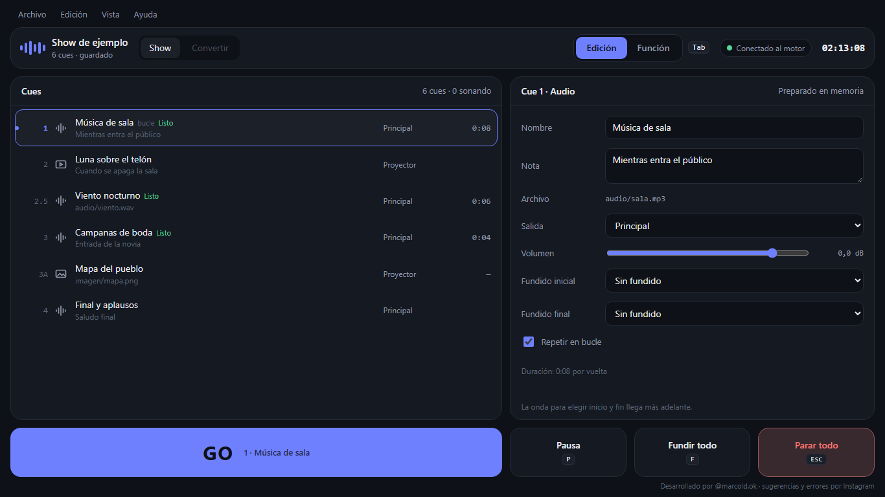

Manual de Otaconvert
Todo lo que necesitas para hacer sonar músicas, efectos, vídeos e imágenes en tu función, explicado paso a paso.
Hecho por amor al arte
Otaconvert se desarrolló por amor al arte, para que cualquier teatro, grande o chico, pueda tener una herramienta buena sin pagar nada.
Es de uso libre y gratuito. Puedes usarlo, copiarlo y compartirlo con quien quieras, en todos los teatros que quieras.
Nadie se salva solo.
Qué es Otaconvert
Otaconvert es un reproductor de cues para teatro. Un cue es cada cosa que pasa en el show: una música, un ruido de lluvia, un vídeo, una foto. Tú preparas la lista de cues en orden, como una receta paso a paso, y en la función solo tocas GO para que salga el siguiente.
- Sonido sin clics ni cortes. Todo está pensado para que no se escuchen chasquidos en los altavoces.
- Vídeo sin pantallazos negros. Al pasar de un vídeo a otro, el nuevo aparece encima del anterior; nunca se ve el negro del medio.
- Funciona sin internet. Internet solo hace falta para descargarlo.
- Es fácil de usar. Pocos botones, y cada uno explica qué hace si se lo preguntas.
Funciona en Windows 10 y Windows 11 de 64 bits.
Instalar o usar sin instalar Próximamente
Hay dos formas de tenerlo. Las dos hacen exactamente lo mismo.
Con instalador
- Descarga
Otaconvert-Setup.exe. - Ábrelo con doble clic. Si Windows muestra un aviso azul, toca Más información y después Ejecutar de todas formas. Aparece porque el programa es nuevo, no porque sea peligroso. Ese aviso sale porque el programa todavía no tiene firma digital; se está gestionando para que no aparezca.
- Sigue los pasos. No pide contraseña de administrador.
Portable (sin instalar)
- Descarga el archivo
.zipportable. - Descomprímelo en una carpeta tuya, por ejemplo en Documentos o en un pendrive.
- Abre
Otaconvert.exe. Toda tu configuración se guarda dentro de esa misma carpeta, así que te la puedes llevar a otro equipo.
No hace falta instalar nada más: ni códecs, ni Python, ni otros programas. Todo viene incluido.
La primera vez que lo abres
El programa revisa solo que tenga todo lo que necesita. Si está todo, no ves nada y empiezas a trabajar.
Si falta algo, aparece una sola ventana que te dice qué es y para qué sirve, con el botón Instalar lo que falta. Se instala desde el propio programa, sin internet y casi siempre sin pedir contraseña de administrador. Nunca se instala nada sin que toques el botón. Si es algo que Otaconvert no puede instalar (por ejemplo, el driver de la tarjeta gráfica), te explica cómo arreglarlo.
Tu primer show en 5 pasos
- Archivo → Nuevo show y elige la carpeta de tu obra.
- Arrastra tus archivos a la lista de cues. Cada archivo se convierte en un cue.
- Ordénalos como van en la obra. Si quieres, ponles el mismo número que en el libreto (1, 1.5, 2A…) y una nota para acordarte de cuándo van.
- Toca un cue y ajusta en el panel derecho: volumen, si aparece despacito (fundido), si se repite (bucle).
- Pulsa Tab para pasar a Función y toca GO (o la barra espaciadora) cada vez que quieras que salga el siguiente.
El programa guarda solo cada poco tiempo, y también puedes usar Archivo → Guardar o Ctrl S.
La carpeta del show
Cada show es una carpeta. Adentro está el archivo del show y todo el material: músicas, efectos, vídeos e imágenes.
- Crea una carpeta para tu obra, por ejemplo
Bodas de sangre. - Pon adentro todos los audios, vídeos e imágenes que vas a usar.
- Desde Otaconvert, agrega esos archivos como cues.
El show se guarda en un archivo .otashow dentro de esa carpeta. Cada vez que guardas, la versión anterior queda como copia en .otaconvert/copias (se guardan las últimas 20), por si necesitas volver atrás. Si se corta la luz mientras guarda, el archivo queda como estaba antes o con lo nuevo, nunca a medias. En registros queda anotado, con la hora, cada GO y cualquier error de la función.
Por seguridad, un show solo puede usar archivos que estén dentro de su carpeta.
Si agregaste algo que estaba en otro lugar, usa Archivo → Reunir medios: copia todo a la carpeta del show. Así la carpeta queda completa y la puedes llevar a cualquier teatro.
La pantalla Ya funciona

| Parte | Para qué sirve |
|---|---|
| Menús de arriba | Archivo (abrir y guardar), Edición (deshacer y ajustes del show), Vista (cómo se ve) y Ayuda. Aquí están guardados los ajustes, para que la pantalla quede limpia. |
| Nombre del show | La obra que tienes abierta y el teatro donde estás. |
| Show · Convertir | Show es donde preparas y haces la función. Convertir sirve para cambiar archivos de audio de formato. |
| Edición · Función | Las dos formas de usar el programa. Se cambia con la tecla Tab. |
| Conectado al motor | Punto verde: la ventana está conectada con el sonido. Más adelante aquí estará la luz verde de Todo listo (el programa revisó la tarjeta de sonido, el proyector y los archivos). |
| Lista de cues | Todos los cues en orden. El que tiene el borde de color es el que sale con el próximo GO. Listo quiere decir que ese audio ya está cargado en memoria. Lo que suena se ve en verde, con una barrita que avanza. |
| Panel derecho | En Edición, los ajustes del cue elegido. En Función, lo que está sonando y lo que viene. |
| GO y botones | Los botones de la función. Están siempre en el mismo lugar. |
Edición y Función Ya funciona
Edición es para preparar el show, como armar los juguetes antes de jugar. Tocas un cue de la lista y a la derecha cambias su nombre, su nota, la salida, el volumen, los fundidos y si se repite en bucle. Los cambios se guardan solos.
Función es para el show de verdad. A la derecha ves en grande lo que suena (con el tiempo que le falta) y lo que viene con el próximo GO, con su nota. Ahí no se puede cambiar nada, para que no te equivoques.
- Cambias de modo con Tab o con los botones Edición y Función de arriba. El sonido no se corta al cambiar.
- GO, Pausa, Fundir todo y Parar todo funcionan en los dos modos.
- En Función no se elige el cue con el ratón (así no lo cambias sin querer): usa ↑ y ↓.
- En Edición, un cue que está sonando aparece bloqueado: para cambiarlo, primero lo paras o tocas Editar igualmente. Lo que cambies se usa desde el próximo GO; lo que ya suena no cambia.
- Próximamente Proteger Función en el menú Vista: para salir de Función habrá que mantener Tab apretado medio segundo.
Elegir dónde sale el sonido y la imagen Próximamente
Siempre puedes elegir por qué tarjeta de sonido sale el audio y en qué pantalla o proyector sale el vídeo. Se hace en Edición → Ajustes del show → Salidas.
Sonido
El show usa salidas con nombre, como Principal (lo que escucha el público) y Auriculares (para preescuchar). A cada una le eliges una tarjeta de sonido de la lista. Si no eliges nada, Principal usa la salida que Windows tenga por defecto.
Imagen
El Proyector se asigna a una de tus pantallas. La lista muestra el nombre del proyector o monitor, la tarjeta gráfica que lo maneja, su resolución y su frecuencia, para que no haya dudas.
En cada teatro
Lo que eliges se guarda en el perfil del teatro. Al llevar el show a otro teatro, el programa te propone las salidas de ese lugar, tú confirmas y queda recordado para la próxima vez.
Vídeo, imágenes y proyector Ya funciona (lo básico)
Funciona con proyectores y pantallas de hasta 4K.
El sonido de los vídeos Ya funciona
Si un vídeo tiene sonido, sale por la salida que elijas (Principal o Auriculares), con su volumen y sus fundidos, igual que un cue de audio. La imagen y el sonido arrancan juntos con el GO. Si el vídeo se repite en bucle, los dos vuelven a empezar a la vez.
- El vídeo queda "Listo" cuando están preparados la imagen y el sonido.
- Con Mayús + F bajan juntos la imagen y el sonido del vídeo.
- Si viene otro vídeo, el sonido del anterior se apaga solo.
- Si el vídeo no tiene sonido, el programa lo dice ("Este vídeo no tiene sonido") y no es un error.
- Si el sonido no se puede leer, el vídeo se ve igual y el programa te avisa.
Próximamente: la miniatura del proyector dentro del programa, elegir la pantalla desde los menús y las 4 esquinas.
Los vídeos y las imágenes salen por el Proyector: la pantalla o proyector que conectaste al equipo. En el programa ves una miniatura con lo mismo que está saliendo, para no tener que darte vuelta.
- Cuando no hay nada proyectando, el proyector muestra negro: nunca el escritorio de Windows, ni avisos, ni el ratón.
- Cuando un vídeo termina, por defecto se queda en el último cuadro. También puedes elegir que se funda a negro o que se corte.
- Windows tiene que estar en modo Extender (no Duplicar). La comprobación previa lo revisa.
Proyectar sobre una figura del escenario
Puedes acomodar la imagen sobre un telón, un árbol o cualquier forma, moviendo sus 4 esquinas hasta que encaje. Esa forma se llama superficie y le pones un nombre (por ejemplo Telón). La posición exacta se guarda para cada teatro. Más adelante también se podrá proyectar sobre formas curvas.
Rampas cortas
Una rampa es una subida o bajada de volumen tan corta que no se nota, pero evita el clic. Si la pones en 0, el sonido empieza o se corta de golpe.
Se ajustan en Edición → Ajustes del show. Cada una tiene su mensaje con consejos. Si un cue tiene un fundido más largo, manda el fundido.
| Rampa | Por defecto | Cuándo activarla | Cuándo dejarla en 0 |
|---|---|---|---|
| Al iniciar | 0 ms (de golpe) | 5 ms si el cue empieza a mitad del archivo. Ej.: al abrir el telón la música entra desde el estribillo. | Golpes, disparos, portazos. Ej.: el disparo de la escena final, exacto con la acción. |
| Al reanudar | 5 ms | Casi siempre. Ej.: retomas la lluvia de fondo después de un parlamento. | Ej.: una radio en escena que se "enciende" de golpe. |
| Al pausar | 10 ms | Casi siempre; 20 a 50 ms para una pausa más suave. Ej.: congelar la música de una coreografía. | Ej.: un efecto de "tiempo detenido". |
| Al parar | 10 ms | Casi siempre. Ej.: Parar todo cuando un actor se adelanta. | Ej.: un apagón total, con el sonido cortado junto con la luz. |
| Al saltar | 5 ms | Siempre. Ej.: en el ensayo, repetir desde el minuto 2. | Casi nunca. |
| De volumen | 5 ms | Siempre. Ej.: bajar el ambiente de la fiesta cuando empieza un diálogo. | Solo pruebas técnicas. |
| Final del archivo | 10 ms | Si el archivo termina de golpe. Ej.: un ruido de motor recortado a mano. | Si ya termina en silencio. Ej.: una canción con su final completo. |
Cómo se ve el programa
En el menú Vista eliges cómo se ve:
- Ya funciona Modo noche: todo oscuro y rojizo, para no encandilar en la cabina.
- Ya funciona Modo día: fondo blanco y máximo contraste, para funciones al aire libre.
- Ya funciona Alto contraste: negro puro y letras blancas, para ver mejor.
- Ya funciona Restaurar vista vuelve todo a como venía.
- Próximamente Vistas listas: Minimalista y Pantalla táctil (botones grandes).
- Ya funciona Idioma: Español o English. Todo el programa, la ayuda, los consejos y los avisos cambian juntos.
- Próximamente Personalizar: arrastras los paneles y los botones a donde te queden más cómodos y tocas Listo. GO y Parar todo se pueden mover y agrandar, pero nunca esconder.
Lo que todavía no funciona aparece en gris en los menús, con la palabra «Próximamente».
En Función el diseño queda bloqueado para que no lo cambies sin querer; solo se pueden cambiar el brillo y los modos noche y día.
Los botones de la función Ya funciona (sonido)
Con Mayús + F se funde solo el último cue que empezó; lo demás sigue sonando.
En el panel Sonando también puedes parar o fundir un solo cue.
Antes de cada GO, el programa ya preparó el audio de ese cue y de los dos siguientes. Si un cue todavía se está preparando, el GO no hace nada y te avisa; vuelve a darlo en un momento. Si un archivo falta o no se puede leer, el cue se salta con un aviso y la función sigue.
La botonera de sonidos Próximamente
La botonera es como un teclado de efectos: cada botón hace sonar algo cuando lo tocas, aunque ya esté sonando otra cosa. Sirve para sonidos que no tienen un momento fijo: aplausos, un timbre, risas, un trueno para improvisar.
- Mostrarla: viene oculta. Se agrega desde Vista → Personalizar.
- Cómo se ve: como botones cuadrados o como lista. Se elige en Vista → Botonera.
- No mueve la lista: tocar un botón no cambia el cue que sale con el próximo GO.
- Cada botón tiene nombre, color, su sonido, volumen, fundido, bucle, salida y, si quieres, una tecla. También eliges qué pasa si lo tocas otra vez mientras suena: se para, vuelve a empezar o suena otra copia encima.
- Páginas: puedes tener varias, por ejemplo "Acto 1" e "Improvisación".
- En la función se puede tocar, pero no cambiar. Esc (Parar todo) y F (Fundir todo) también paran sus sonidos.
Teclas rápidas
| Tecla | Qué hace |
|---|---|
| Espacio | GO: empieza el siguiente cue. |
| Esc | Parar todo. Funciona siempre, aunque estés escribiendo o tengas un menú abierto (y de paso lo cierra). |
| P | Pausa y seguir. |
| F | Fundir todo. |
| Mayús + F | Fundir solo el último cue que empezó. |
| ↑ ↓ | Elegir qué cue sale con el próximo GO. |
| Tab | Cambiar entre Edición y Función. |
| Ctrl S | Guardar (también se guarda solo cada 30 segundos y al cerrar). |
| H | Modo Ayuda: tocar cualquier parte y ver qué hace. |
| Ctrl Z / Ctrl Y | Deshacer y rehacer (en Edición). Próximamente |
La lista de teclas también está en Ayuda → Atajos de teclado.
Si estás escribiendo en un campo de texto, Tab pasa al campo siguiente en vez de cambiar de modo. Las teclas se podrán cambiar desde el menú Vista.
Antes de la función
La luz verde
Arriba ves Todo listo en verde cuando el programa revisó que:
- la tarjeta de sonido está conectada y cada salida tiene su lugar;
- el proyector está en modo Extender y con la resolución correcta;
- todos los archivos están y se pueden leer;
- ningún sonido pasa del volumen máximo.
Si algo falla, te dice qué es y cómo arreglarlo. Si la tarjeta de sonido se desconecta en medio del show, el programa avisa fuerte: nunca pasa el sonido a los parlantes de la computadora sin decirte.
Prueba de hardware Ya funciona
Prueba tu tarjeta de sonido, tus pantallas y el vídeo, y hace un informe. Conviene hacerla una vez en cada equipo o teatro nuevo, mejor una semana antes del estreno. En el programa terminado estará en Ayuda → Prueba de hardware; hoy viene como una carpeta aparte:
- Descárgala desde
github.com/marcoldmusica-cyber/otaconvert/releases(versión "Prueba de hardware 0.0.1", archivoOtaconvert-Prueba-de-hardware-0.0.1.zip). - Descomprime la carpeta
Otaconvert-Prueba-de-hardwareen el equipo (no la abras desde dentro del .zip). - Si vas a usar proyector, conéctalo antes y elige Extender con las teclas Windows + P.
- Haz doble clic en
Prueba de hardware.exey no toques nada unos 3 a 5 minutos: suenan tonos suaves y la pantalla se llena de colores y vídeos. - Al final queda un archivo
Informe-hardware-….txten esa carpeta (o en Documentos). Envíalo tal cual.
El informe dice, para cada prueba, BIEN o PROBLEMA, y al final si el equipo está listo. No instala nada ni cambia nada del equipo.
Probada el 15/10/2026 en un equipo con Windows 10, procesador i5 y tarjeta GTX 1050 Ti: 13 pruebas, todas BIEN, en unos 3 minutos.
Lista para el día de la función
- Equipo limpio: cierra los demás programas.
- Desconecta internet si puedes. Otaconvert no lo necesita.
- Pausa las actualizaciones de Windows para que no se reinicie solo. La comprobación previa te lo recuerda.
- Enchufa la computadora a la corriente.
- Espera la luz verde y prueba el primer cue a bajo volumen.
En Función, el programa evita que la computadora se suspenda o que aparezca el salvapantallas.
Si algo sale mal
No se escucha nada
Mira la luz de arriba: si no está verde, te dice qué falta. Revisa que la tarjeta de sonido esté conectada y que en Edición → Ajustes del show la salida Principal apunte a ella. Revisa también el volumen maestro.
Se escucha un clic al empezar un sonido
Pasa si el sonido empieza a la mitad del archivo. Activa la rampa al iniciar (5 ms) o ponle un fundido de entrada a ese cue.
El sonido se corta o tartamudea
Cierra otros programas. Si sigue, haz la Prueba de hardware: te dice si conviene darle más margen al audio en ese equipo.
El vídeo sale en la pantalla equivocada
Windows a veces reordena las pantallas. Revisa que esté en modo Extender. El programa vuelve a ubicar el Proyector solo; si no, elige la pantalla correcta en los ajustes del teatro.
Toqué GO de más
Pulsa Esc (Parar todo) o para solo ese cue desde el panel Sonando. Con ↑ ↓ vuelves a elegir el cue que sigue.
El programa se cerró
Un vigilante lo vuelve a abrir solo, en menos de un segundo, y el sonido sigue desde donde iba. El trabajo se guarda solo cada poco tiempo, con copias de seguridad.
Consejos y Modo Ayuda Ya funciona
Consejos
Al pasar el ratón por una opción, o al tocar su ?, aparece un mensaje corto que te dice cuándo conviene usarla y cuándo no, cada uno con un ejemplo de escena. Hoy los tienen: salida, volumen, fundido inicial y final, bucle, nota, y en Vista el Modo noche, el Modo día y el Alto contraste. Siempre salen en el idioma del programa.
Si ya conoces el programa y te molestan, desactívalos en Ayuda → Mostrar consejos. Esa misma casilla los vuelve a activar cuando quieras: nunca desaparece.
Modo Ayuda
Pulsa H o elige Ayuda → Modo Ayuda. Las partes de la pantalla se marcan con un borde punteado: toca cualquiera y te explica qué hace, con palabras muy simples. Mientras está activo, tocar algo con el ratón no lo pone en marcha.
Las teclas siguen funcionando aunque estés en el Modo Ayuda: Espacio da GO y Esc para todo (y además sale de la ayuda). Así nunca te quedas sin GO ni sin el botón de emergencia. Para salir de la ayuda: H, Esc o el botón Salir de la ayuda.
Primeros pasos
La primera vez que abres el programa aparece una guía de cinco pasos. Puedes volver a verla en Ayuda → Primeros pasos.
Idioma
En Vista → Idioma eliges Español o English. Cambia todo junto: menús, botones, consejos, ayuda y los avisos del programa. Nunca quedan mezclados. (En inglés, el modo Función se llama Live.)
Convertir archivos Próximamente
Hoy ya funciona como programa aparte (Otaconvert versión 1). Dentro de la versión 2 llegará como pestaña.
La pestaña Convertir cambia muchos archivos de audio a otro formato de una vez: arrastras los archivos o una carpeta, eliges el formato y tocas convertir. Nunca borra ni sobrescribe tus originales.
Para el show no hace falta convertir nada: el programa prepara cada audio solo. Mientras estás en Función, la conversión se pausa para no molestar.
Especificaciones técnicas
Para técnicos y usuarios avanzados. Estado al 15/10/2026: Fase 0 (prueba técnica del motor).
Plataforma y distribución
- Windows 10 y 11 de 64 bits (x86-64). Sin administrador. Instalador por usuario y versión portable (
portable.txtjunto al exe → configuración en esa carpeta, sin registro). - Motor en Rust, en proceso aparte de la ventana; un vigilante lo reinicia y recarga el show si se cae (objetivo < 1 s). Probado 10 fallos a propósito: si el motor se cierra, vuelve a sonar en 86 ms como máximo; si se congela, en 401 ms como máximo, y el sonido sigue desde donde iba.
- Pensado para funcionar bien en equipos modestos sin recortar funciones: la tarjeta gráfica decodifica el vídeo, el audio se prepara en memoria y no se remuestrea en vivo. La Prueba de hardware mide qué aguanta cada equipo.
- Runtime de C enlazado estáticamente (
+crt-static): no requiere el VC++ Redistributable. Comprobado en la compilación - Interfaz servida por el motor, en su propia ventana (proceso aparte: si la ventana falla, el sonido sigue); sin WebView2 se abre en el navegador. Ya funciona
- 100 % sin conexión. Sin telemetría. Búsqueda de actualizaciones apagada por defecto.
Audio
| Elemento | Especificación |
|---|---|
| API | WASAPI modo compartido por defecto (crate cpal 0.18.2); ASIO opcional. Ya funciona: WASAPI |
| Formato interno | float 32 intercalado; mezcla en float 32. |
| Frecuencia | La de la tarjeta, leída al abrir. Sin remuestreo en vivo: cada audio se prepara entero en memoria a esa frecuencia; un audio a otra frecuencia se rechaza. |
| Periodo y margen | WASAPI llama cada GetDevicePeriod (10 ms típico). El margen (BufferSize::Fixed) agranda el búfer de WASAPI: más seguridad y más latencia. Margen por defecto a decidir con la Prueba de hardware. |
| Prioridad | Hilo de audio con prioridad de tiempo real de Windows (MMCSS, feature realtime de cpal). |
| Tiempo real | El hilo de audio no bloquea ni pide o libera memoria: comandos por cola sin bloqueo (rtrb); los audios que dejan de sonar vuelven al hilo de control para liberarse. Verificado con un asignador que cuenta. |
| Rampas | Lineales, en cuadros. Por defecto: inicio 0, reanudar 5 ms, pausa 10 ms, parada 10 ms, salto 5 + 5 ms, volumen 5 ms, final de archivo 10 ms. Configurables de 0 en adelante y cambiables en vivo. |
| Salida | Estéreo. Limitador maestro transparente activo por defecto: mira 1,5 ms adelante y nunca deja pasar de −0,1 dBFS; si nada pasa del techo, no toca el sonido. Ya funciona |
| Preparación | Cada audio se lee entero (Symphonia: MP3, AAC/M4A, ALAC, FLAC, OGG/Vorbis, WAV, AIFF, CAF, MKV/WebM) y se adapta a la frecuencia de la tarjeta (rubato) en segundo plano: el cue en espera y los dos siguientes. Opus, WMA, AC3 y DTS: convertirlos antes en la pestaña Convertir. Ya funciona |
| Salidas lógicas | El show guarda nombres (Principal, Auriculares); cada teatro tiene un perfil que los empareja con tarjeta y canales. |
Pruebas automáticas del audio Ya funciona
- Detector de chasquidos por segunda diferencia
x[n] − 2·x[n−1] + x[n−2]; umbral para tonos1,5·A·(2·sin(π·f/fs))² + 0,002. - Estrés: 3 × 10 min a 48 kHz, unas 1.850 órdenes al azar cada una (iniciar, parar, pausar, reanudar, saltar, volumen, parar todo, maestro), bloques de 1 a 1024 cuadros: 0 discontinuidades (máxima 0,0023 frente a un umbral de 0,0127), 0 recortes.
- Control del detector: sin rampas encuentra cientos de chasquidos en 2 minutos.
- Prueba en vivo en la tarjeta real:
otaconvert-motor --prueba-vivo [segundos] [margen_ms](intervalos entre llamadas, cortes probables, discontinuidades, recortes, errores). - Primera prueba en un equipo real (15/10/2026, tarjeta USB Audio CODEC, 48 kHz): 60 s con 50 ms de margen y 30 s con 20 ms, cientos de órdenes al azar, intervalo máximo entre llamadas 10,9 ms, 0 cortes, 0 discontinuidades, 0 recortes. Esta medición no ve cortes dentro del propio Windows o del driver: la Prueba de hardware grabará la salida para comprobarlo.
- Show de ejemplo escuchado en el mismo equipo (16/10/2026): GO, Pausa, Mayús+F, Fundir todo y Parar todo con audios MP3, WAV y FLAC superpuestos. El registro anotó cada orden a su hora y la persona que escuchaba confirmó: sin clics ni cortes.
- Elección de salida probada en el mismo equipo: la tarjeta USB y la salida HDMI del monitor, elegidas por número, por nombre y por identificador, sin cortes ni chasquidos. Una salida que no existe da error y no suena por otra. La lista de pantallas muestra el monitor por su nombre real, su tarjeta gráfica, 1920 × 1080 a 60 Hz.
Vídeo Prototipo funcionando
- libmpv con
vo=gpu-next,gpu-context=d3d11,hwdec=d3d11va; si la GPU no decodifica, pasa a CPU. - libmpv (API 2.x) se carga con su ruta completa desde la carpeta del programa; cada reproductor queda limitado a archivos locales: sin scripts, sin configuración externa, sin internet, sin teclado ni cursor propios. El sonido de los vídeos lo maneja el motor de audio.
- Precarga del cue en espera y los 2 o 3 siguientes, con el primer cuadro listo en la GPU. Capas: el nuevo se dibuja encima y el anterior se retira cuando el nuevo ya muestra imagen.
- Prueba automática (15/10/2026, GeForce GTX 1050 Ti, 1920 × 1080 a 60 Hz): 300 cambios entre vídeos H.264 1080p60 reales con dos capas, mirando la pantalla unas 57 veces por segundo: 0 cuadros negros, 0 cuadros perdidos, decodificación por la tarjeta gráfica (d3d11va), del GO a la imagen 18 ms de media y 26 ms como máximo.
- El programa compilado por GitHub, probado en el mismo equipo: 100 cambios con vídeos reales, 0 cuadros negros, 0 perdidos, 18 ms del GO a la imagen. En un equipo sin tarjeta gráfica (máquina virtual) tampoco hubo negros, pero se pierden cuadros y tarda unos 60 ms: para funciones conviene una tarjeta gráfica.
- libmpv necesita
vulkan-1.dll: viene incluida con el programa (Vulkan Runtime 1.4.363.0 de LunarG), así funciona aunque el equipo no la tenga. - Si al equipo le falta Microsoft Edge WebView2 (lo que muestra la ventana), su instalador viene incluido en el instalador y en la versión portable, y se instala sin internet con el botón "Instalar lo que falta".
- Ventana de proyección en proceso aparte, negra en reposo. El reloj de la tarjeta de sonido manda.
- Salida de hasta 4K (3840 × 2160), objetivo 60 Hz, con vídeos H.264 y HEVC de hasta 4K60 decodificados por la tarjeta gráfica. Probado: 20 cambios con 4K60 H.264 y 20 con 4K60 HEVC en una GTX 1050 Ti, sin negros ni cuadros perdidos; y 60 s seguidos de 4K60 H.264 y de 4K60 HEVC a 60 cuadros por segundo, 0 cuadros perdidos, con la tarjeta a 41 °C como máximo (en un monitor 1080p; falta probar una pantalla 4K real).
- Contenedores MP4, MOV, MKV con decodificadores incluidos; Hap opcional.
- Mapeo: contenido → recorte → deformación (4 puntos; malla en la Fase 3) → máscara → bordes, todo en la GPU en un solo paso.
Seguridad
- La ventana y el motor se hablan solo dentro del propio equipo (127.0.0.1), con una clave secreta nueva en cada arranque; se comprueban la dirección y el origen de cada pedido, así ninguna página web ni otro equipo de la red puede manejar el show. Probado
- No abre puertos ni usa internet. Las funciones de red futuras (GO desde el celular, OSC, MIDI por red) vendrán apagadas y con emparejamiento.
- DLL:
/DEPENDENTLOADFLAG:0x800ySetDefaultDllDirectories(LOAD_LIBRARY_SEARCH_DEFAULT_DIRS), para que una DLL falsa junto al programa o en la carpeta actual no se cargue. Comprobado en la compilación - El archivo del show es solo datos: no ejecuta nada y no lee fuera de su carpeta.
- Librerías revisadas contra la base de vulnerabilidades RustSec/OSV en cada cambio y cada semana.
- Cada descarga se publica con su huella SHA-256.
- Firma digital: solicitada a SignPath Foundation (gratuita para software libre). Mientras no esté aprobada, Windows puede mostrar el aviso azul la primera vez. El exe ya lleva su nombre ("Otaconvert"), versión, icono y un manifiesto que dice que nunca pide permisos de administrador.
- Todo el proyecto, incluida la versión 1, es software libre GPLv3.
Comandos del motor (Fase 0)
| Comando | Qué hace |
|---|---|
--version | Versión del motor. |
--prueba-hardware [--sin-pausa] | Todas las pruebas en orden (equipo, componentes, sonido por cada salida, pantallas, cambios de vídeo, reproducción 1080p y 4K, vigilante) con informe de texto. También con doble clic en Prueba de hardware.exe. |
--info-equipo | Windows, procesador, memoria, tarjetas gráficas y si está enchufado. |
--show-ejemplo <carpeta> | Crea un show de ejemplo (6 cues y una página de botonera) para probar. |
--abrir-show <show> [--salida X] [--auriculares Y] [--margen ms] [--navegador | --sin-navegador] | Abre el show con sonido en la ventana propia de Otaconvert (WebView2, en un proceso aparte): GO, Pausa (P), Fundir todo (F), Mayús+F, Parar todo (Esc). Si la ventana se cae, vuelve a abrirse sola sin cortar el sonido (medido: 130 ms); si WebView2 falta o se cae más de 3 veces en un minuto, se abre la misma interfaz en el navegador con un aviso. Cerrar la ventana termina el programa y guarda lo que haya cambiado. --navegador la abre en el navegador; --sin-navegador no abre nada (pruebas). Si una tarjeta da errores, avisa fuerte. |
--comprobar | Revisa los componentes: Windows 10/11, libmpv, Vulkan y WebView2. Dice qué falta y cómo se arregla; código de error si falta algo. |
--listar-salidas | Salidas de audio numeradas, con su configuración, cuál es la predeterminada y su identificador estable. |
--listar-pantallas | Pantallas: nombre del monitor o proyector, tarjeta gráfica, resolución en píxeles reales, frecuencia, posición y cuál es la principal. |
--prueba-video [cambios] | Abre la proyección y hace cambios entre dos capas contando cuadros negros, colores raros, cuadros perdidos y el tiempo del GO a la imagen. |
--prueba-reproduccion [s] --archivo <vídeo> | Reproduce un vídeo en bucle y cuenta cuadros perdidos y atrasados: mide si el equipo aguanta ese vídeo (por ejemplo, 4K a 60 cuadros). |
--pantalla <número | nombre | id> | Pantalla de la proyección; si no se indica, la que no es principal. |
--carpeta <ruta> | Vídeos de prueba llamados con el color de su centro (RRGGBB.mp4). |
--salida <número | nombre | id> | Elige la salida de audio para --tono y --prueba-vivo. Si no existe, da error: nunca usa otra en silencio. |
--prueba-vigilante [fallos] | Provoca caídas y cuelgues del motor a propósito y mide cuánto tarda en volver a sonar (objetivo: menos de 1 segundo). |
--tono [s] [margen_ms] | Tono de 440 Hz a −12 dBFS en la salida predeterminada. |
--prueba-vivo [s] [margen_ms] | Órdenes al azar en la tarjeta real e informe; termina con código de error si encuentra problemas. |
Código y licencias
- Código fuente:
github.com/marcoldmusica-cyber/otaconvert(carpetav2/). Compilación automática en GitHub Actions. Las piezas de terceros se guardan con su huella en la versión publicadadependencias-2026-10-15del mismo repositorio, para que la compilación nunca dependa de que otros las borren. - Otaconvert V2: GPLv3 o posterior.
- Ventana (
otaconvert-ventana.exe, un programa aparte del motor): wry (Apache-2.0 o MIT) y tao (Apache-2.0); el cargador de WebView2 de Microsoft (BSD-3-Clause) va dentro de ese exe, con un permiso adicional de la GPLv3 (sección 7) escrito enLICENSE-EXCEPTION-WEBVIEW2.txt. Ese exe no carga libmpv ni otras piezas GPL de terceros. La ventana solo puede mostrar la interfaz del propio motor: no abre otras páginas, ventanas nuevas ni descargas, no pide cámara ni micrófono y no tiene atajos de navegador. Sus datos (caché) se guardan en%LOCALAPPDATA%\Otaconvert\WebView2, o en la carpetadatosjunto al programa en la versión portable. - Terceros: cpal (Apache-2.0), rtrb (MIT o Apache-2.0); mpv/libmpv (GPLv2 o posterior) y FFmpeg (compilación de shinchiro/mpv-winbuild-cmake); cargador de Vulkan (MIT y Apache-2.0, de LunarG); WebView2 de Microsoft (instalador oficial, sin modificar); ASIO SDK de Steinberg (GPLv3) si se compila con ASIO. La versión 1 incluye FFmpeg, CustomTkinter, tkinterdnd2, imageio-ffmpeg y Python (ver
THIRD_PARTY.txt).
Libre y gratuito
Otaconvert fue desarrollado por amor al arte. Es software libre y gratuito, con licencia GPLv3: puedes usarlo sin pagar, copiarlo, compartirlo, estudiar cómo está hecho y mejorarlo, siempre que lo que compartas siga siendo libre.
Si te sirve, compártelo con otros teatros, otros técnicos, otros grupos. Si encuentras un error o tienes una idea, cuéntalo: así mejora para todos.
Desarrollado por @marcold.ok (Instagram). Escríbeme para sugerir mejoras, reportar errores o contarme cómo lo usas en tu teatro.
Nadie se salva solo.